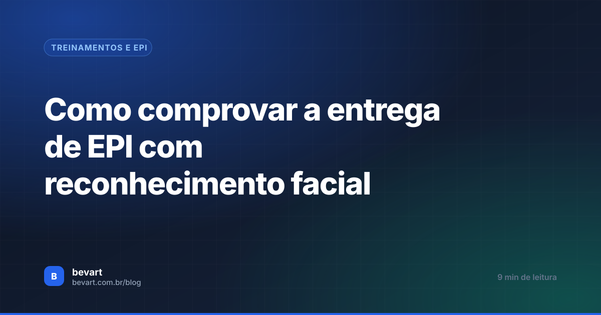
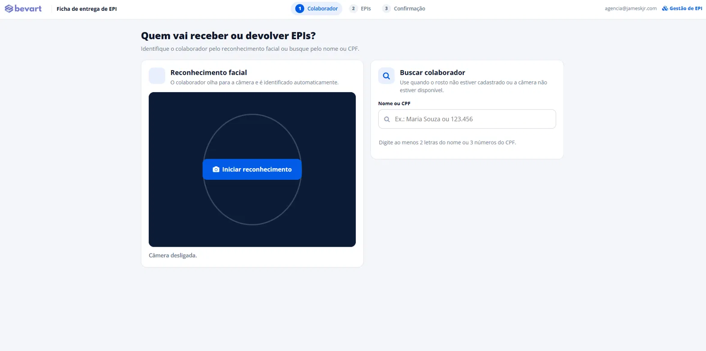
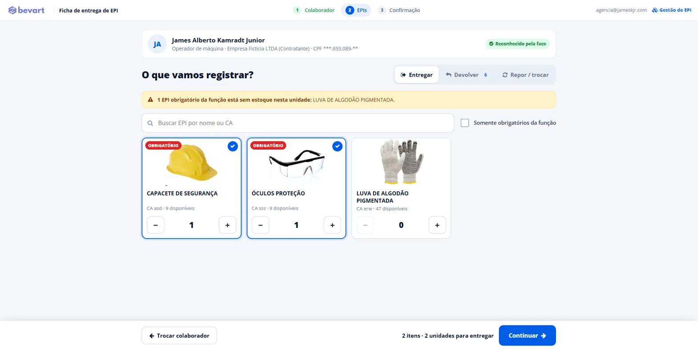
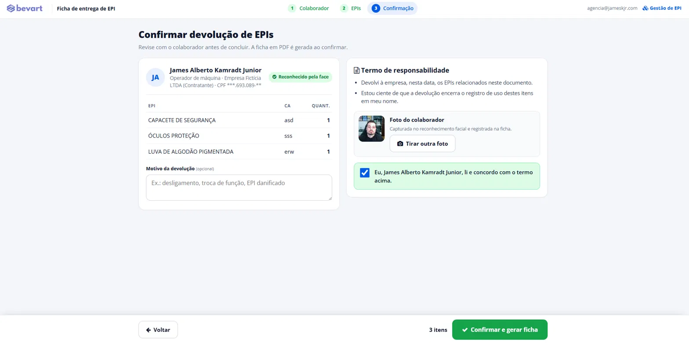
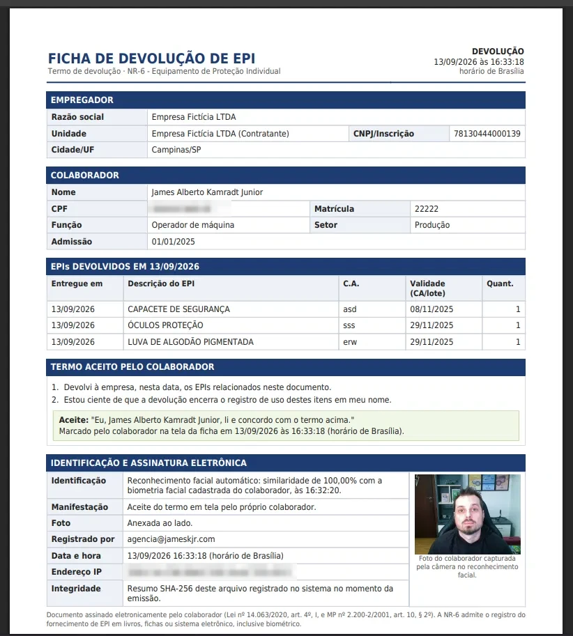

Como comprovar a entrega de EPI com reconhecimento facial
Papel some, assinatura é contestada e planilha não prova nada. Veja o que a ficha de EPI precisa ter para sustentar a entrega na fiscalização e como a foto do reconhecimento facial vai para dentro do PDF.

O essencial em 30 segundos
- A entrega de EPI se comprova com um registro individual: quem recebeu, qual EPI (com CA), quando, o termo aceito e uma identificação do trabalhador difícil de contestar.
- A NR-6 admite o registro em sistema eletrônico, inclusive biométrico. Na obra, o rosto funciona onde a digital falha, e só precisa da câmera do tablet ou do celular.
- Com a foto do momento dentro do PDF, o documento mostra que foi o próprio funcionário, naquele local e horário, que pegou ou devolveu o equipamento.
Para comprovar a entrega de EPI, a empresa precisa de um registro individual e datado. Ele diz qual equipamento (com o número do CA) foi entregue a qual trabalhador, contém o termo que ele aceitou e identifica esse trabalhador de um jeito que não dependa da palavra de ninguém. Ficha de papel com rabisco cumpre a primeira parte e falha na última.
O problema não aparece no dia da entrega. Aparece meses depois: no acidente, na reclamatória de insalubridade, na visita do auditor fiscal. O funcionário diz que nunca recebeu a luva, a ficha está numa caixa na obra que já fechou e a assinatura "não é dele". A partir daí, é a empresa que precisa provar.
Este artigo mostra o que a legislação cobra, o que uma ficha precisa conter para servir de prova e por que o reconhecimento facial, com a foto anexada ao PDF, virou a forma mais prática de fechar essa conta.
O que a legislação exige de quem fornece EPI
A obrigação de fornecer está na CLT. O art. 166 manda a empresa fornecer aos empregados, gratuitamente, EPI adequado ao risco e em perfeito estado de conservação e funcionamento. O art. 157 soma a obrigação de cumprir as normas e instruir os empregados. Do outro lado, o art. 158 obriga o empregado a usar o equipamento e diz que a recusa injustificada é ato faltoso.
A NR-6 detalha a rotina. Além de adquirir o EPI com CA e adequado ao risco, o empregador precisa orientar e treinar o trabalhador sobre uso, guarda e conservação, exigir o uso, substituir o equipamento danificado ou extraviado e registrar o fornecimento.
A NR-6 permite que o registro do fornecimento seja feito em livros, fichas ou sistema eletrônico, inclusive por sistema biométrico. Ficha digital com biometria não é um "jeitinho": é uma das formas que a própria norma prevê.
E fornecer não basta. A Súmula 289 do TST diz que o simples fornecimento do EPI não isenta o empregador do adicional de insalubridade: cabe a ele tomar as medidas que levem ao uso efetivo do equipamento. Na prática, quem tem o histórico de cada entrega, reposição e devolução consegue mostrar que acompanha o uso. Quem só tem a nota de compra, não.
O que a ficha de EPI precisa ter para valer como prova
Não existe documento impossível de contestar. Existe documento difícil de contestar. A tabela abaixo mostra o que torna uma ficha de EPI difícil de derrubar, e por quê.
| O que a ficha registra | Por que importa na fiscalização |
|---|---|
| Empregador e unidade (razão social, CNPJ, cidade) | Vincula a entrega à empresa responsável, inclusive em obras e filiais. |
| Trabalhador (nome, CPF, matrícula, função e setor) | Mostra que o EPI foi para aquela pessoa e para a função exposta ao risco. |
| EPI com número do CA, validade e quantidade | Sem CA, não dá para provar que o equipamento era certificado e adequado. |
| Data e hora da entrega, reposição ou devolução | Permite comparar com a data do acidente, da admissão ou da troca de função. |
| Termo aceito, com o texto exato que o trabalhador leu | Registra a ciência sobre uso, guarda, conservação e comunicação de dano. |
| Identificação do trabalhador no ato | É o que responde ao "essa assinatura não é minha". |
| Integridade do arquivo | Mostra que o documento não foi editado depois de emitido. |
Ficha assinada em branco na admissão e preenchida depois, EPI descrito como "luva" sem CA, CA vencido na data da entrega e colega assinando por quem faltou. Na primeira contestação, qualquer um desses erros derruba o documento inteiro.
Por que o reconhecimento facial funciona melhor que a digital na obra
O leitor de impressão digital parece a escolha óbvia até ser instalado no almoxarifado de uma obra. Cimento, argamassa e abrasivos desgastam as digitais, mão calejada ou suja não é lida, e ninguém quer tirar a luva a cada retirada. O sensor fica sujo, a taxa de falha sobe e a equipe volta para o papel "só hoje".
O rosto não tem esse problema. O trabalhador olha para a câmera, sem tocar em nada, e o sistema compara com a biometria facial do cadastro. Não há leitor para comprar: serve a câmera do tablet, do celular ou a webcam do computador.
| Forma de registro | Identifica quem recebeu? | Funciona na obra? | Ponto fraco |
|---|---|---|---|
| Ficha de papel | Só pela assinatura | Sim | Perde, rasga e a assinatura é contestada |
| Planilha | Não | Sim | Não tem manifestação do trabalhador |
| Assinatura desenhada na tela | Fraco | Sim | Qualquer pessoa rabisca por outra |
| Impressão digital | Sim | Com falhas | Dedo desgastado, sujo ou com luva não é lido |
| Reconhecimento facial com foto no PDF | Sim, com imagem | Sim | Exige cadastrar a foto de cada funcionário |
O ganho maior é de prova. Na digital, o registro diz "a digital conferiu". No reconhecimento facial com foto, qualquer pessoa que abrir o PDF vê o rosto de quem estava diante do tablet no momento da entrega. Fica bem mais difícil alegar que outra pessoa pegou o equipamento em seu nome.
A foto de quem recebeu, dentro da ficha de EPI
No Bevart, o colaborador é identificado pelo rosto no tablet e o PDF sai com a foto, o termo aceito e os EPIs com CA, pronto para mostrar ao auditor.
Criar conta grátisComo fica a entrega de EPI com reconhecimento facial
O fluxo foi pensado para um tablet fixo no almoxarifado ou para o celular do técnico em campo, mas funciona igual no computador. São três telas: colaborador, EPIs e confirmação.

- Cadastre o estoque. Cada EPI entra com CA, validade, quantidade e unidade. Vinculado ao inventário de riscos, ele aparece como obrigatório para as funções expostas.
- Identifique o colaborador. Ele olha para a câmera e o sistema o reconhece sozinho. Se o rosto não estiver cadastrado, a busca por nome ou CPF resolve, e a ficha registra que a identificação foi manual.
- Escolha o que vai registrar. Entregar, devolver ou repor. Os EPIs obrigatórios da função aparecem destacados, e o sistema avisa quando um deles está sem estoque na unidade.
- Confirme com o colaborador. Ele revisa os itens, lê o termo de responsabilidade e marca o aceite. A foto do reconhecimento vai junto, e dá para tirar outra na hora.
- Gere a ficha. O PDF é emitido, guardado na nuvem e já aparece em Fichas assinadas. A tela volta para o início, pronta para o próximo da fila.


O passo a passo com as telas do cadastro de estoque está no guia de estoque de EPI e ficha de entrega.
O que vai dentro do PDF da ficha de EPI
A ficha foi montada para responder, numa página, às perguntas que a fiscalização faz. Cada PDF traz:
- Empregador e colaborador: razão social, unidade, CNPJ, nome, CPF, matrícula, função, setor e admissão.
- EPIs da operação: descrição, CA, validade e quantidade. Na devolução, também a data em que cada item tinha sido entregue e o motivo informado.
- Termo aceito: o mesmo texto que o colaborador leu na tela, com a data e a hora do aceite no horário de Brasília.
- Identificação e assinatura eletrônica: a similaridade do reconhecimento facial, a foto capturada, quem registrou, a data e hora e o endereço IP.
- Integridade: o resumo SHA-256 do arquivo fica guardado no sistema. Se alguém alterar o PDF, o resumo deixa de bater.
- Situação do colaborador: todos os EPIs que estão com ele e os EPIs exigidos para a função no inventário de riscos, marcados como "em uso" ou "sem entrega registrada".

A ficha só afirma o que aconteceu. Se o colaborador foi escolhido pela busca, e não pelo rosto, o PDF diz isso com essas palavras. Um documento que nunca exagera é justamente o que o auditor e o juiz levam a sério.
A última seção tem um efeito que vai além da entrega do dia. Ela mostra, em cada ficha, se o trabalhador tem todos os EPIs que o inventário de riscos do PGR exige para a função. Pendência aparece antes de virar autuação.
O que o administrador enxerga depois da entrega
Cada entrega, reposição e devolução alimenta a gestão de EPI. Sem planilha paralela, o painel da unidade mostra:
- Estoque disponível, já descontando o que está em uso com os colaboradores;
- Estoque baixo ou esgotado, para saber o que comprar antes de faltar;
- Validade vencida ou vencendo em 30 dias, para renovar a tempo;
- Com quem está cada EPI, para cobrar a devolução no desligamento ou na troca de função;
- Histórico de entregas e devoluções por período e por funcionário, com exportação para Excel;
- Fichas assinadas por tipo (fornecimento, reposição e devolução), com o hash de integridade de cada PDF.
Os PDFs ficam em armazenamento privado na nuvem e só são baixados por usuários autenticados da conta. Quando a fiscalização pede a ficha de um trabalhador de dois anos atrás, a busca leva segundos. O CA do EPI também é informação que o eSocial usa: vale conferir como o S-2240 registra o EPI nas condições ambientais do trabalho.
Perguntas frequentes
Ficha de EPI digital tem validade na fiscalização?
Sim. A NR-6 permite registrar o fornecimento de EPI em livros, fichas ou sistema eletrônico, inclusive biométrico. Para servir de prova, a ficha digital precisa identificar empregador, trabalhador, EPI com CA, data e termo aceito, e garantir que o arquivo não foi alterado depois.
A foto do funcionário aparece no PDF da ficha de EPI?
Sim. No Bevart, a foto capturada no reconhecimento facial, ou tirada na confirmação, vai para o PDF ao lado dos dados da identificação, com a legenda dizendo em que momento ela foi feita.
Reconhecimento facial para EPI precisa de equipamento especial?
Não. A ficha de entrega abre no navegador e usa a câmera do tablet, do smartphone ou a webcam do computador. Não há leitor biométrico para comprar nem aplicativo para instalar.
E se o rosto do funcionário não for reconhecido?
O responsável busca o colaborador pelo nome ou CPF e segue a entrega normalmente. A ficha registra que a identificação foi manual, sem verificação biométrica. Vale atualizar a foto do cadastro para as próximas entregas.
Usar biometria facial na entrega de EPI fere a LGPD?
A LGPD trata biometria como dado pessoal sensível, então o uso precisa ter finalidade clara e base legal, como a prevenção à fraude na identificação em sistemas eletrônicos. Informe o trabalhador sobre o uso. No Bevart, a biometria de cada empresa fica separada e é apagada quando o funcionário é excluído.
Se a sua empresa ou os seus clientes ainda guardam ficha de EPI em papel, comece pelo que mais aparece em fiscalização: cadastre os EPIs com CA e validade, vincule-os aos riscos das funções e faça as próximas entregas pelo tablet. Veja também como funciona o controle de EPI com reconhecimento facial no Bevart.